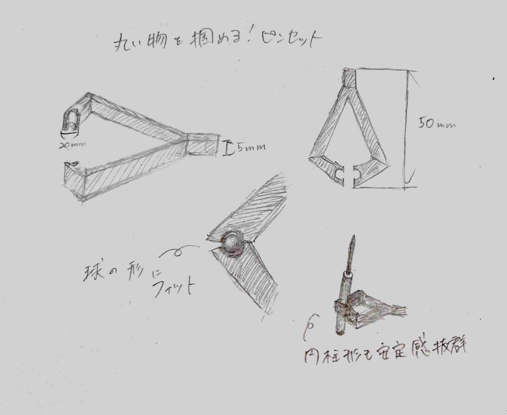
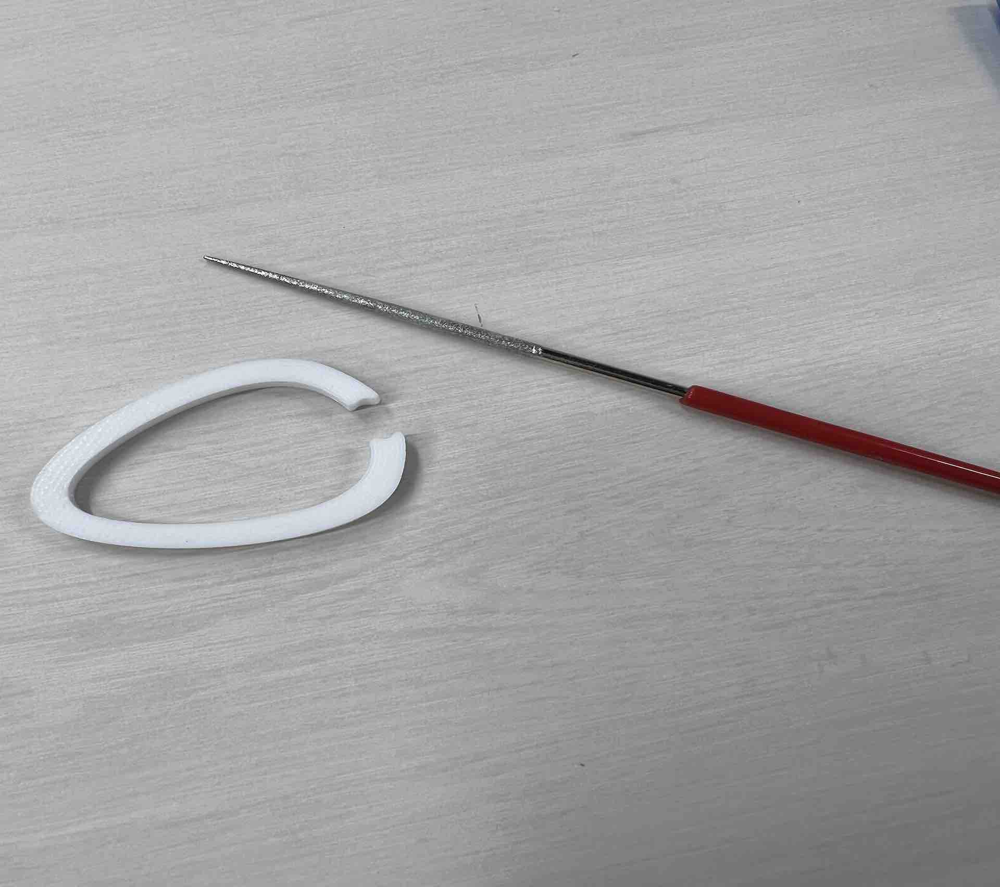
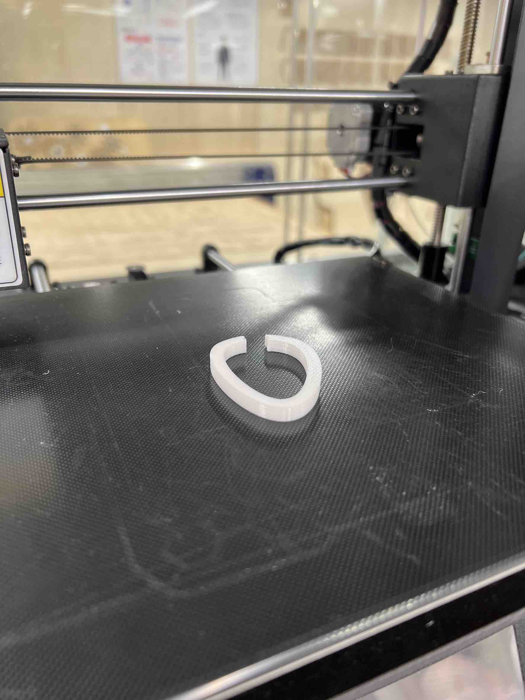

〜構想段階のスケッチ

〜完成品〜


〜設計ファイル〜
pincette(XBP).stl
〜作品の説明〜
このピンセットは名前の通り、丸いものを掴むことだけを目的としています。
ピンセットの先が細い通常のものとは違い、これは掴んだ際に、円の穴があくようにできています（上記の写真類を参照）。
こうすることで、球体や円柱形のものを、より安定して掴むことができます。
また、先端は通常のピンセットと同じような作りなので、通常のピンセットのように使うこともできます。
〜この作品を制作した理由〜
私はビーズなどを使用することがあり、その際、ビーズは小さいうえに球体なので掴みづらく、苦戦することがよくありました。
そのため、今回ピンセットを進化させようということで、この丸いものを掴むためのピンセットを思いつき、制作しました。